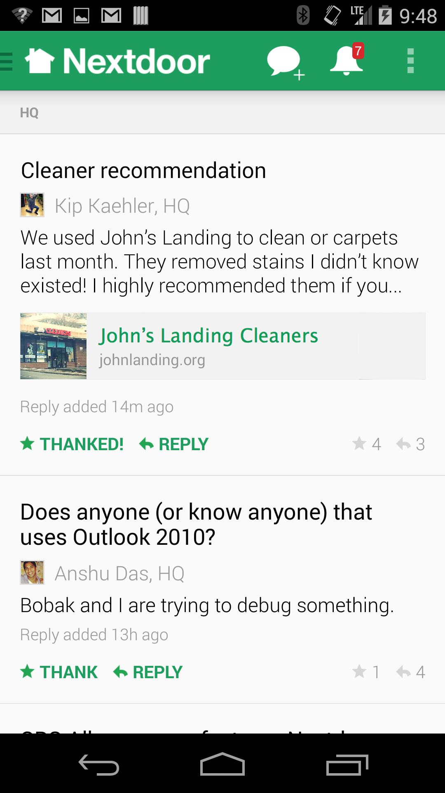
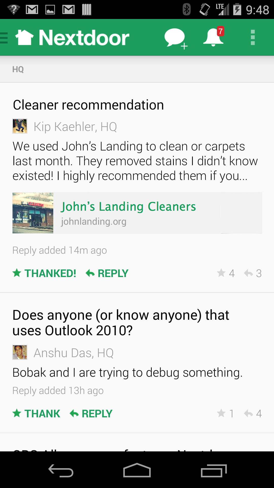

Nextdoor
2014 JUNE - PRESENT
In my first 3 weeks at Nextdoor, I worked with four engineers and one product manager to launch automatic link previews for new posts, which was rolled out platform-wide to over 40,000 U.S. neighborhoods on iOS, Android, and desktop. I wrote the HTML/CSS for the desktop implementation.
Since successfully completing this project, my responsibilities have expanded to include three other projects: the enhancement of our current photo upload experience, designing an entirely new type of post on iOS, Android and desktop, and introducing personability into static pages on the site.
A few tools I've relied on thus far:
- Experience diagramming
- HTML5 & CSS3
- Adobe CS6
- Sketch 3
- Thumbnail sketches
- InVision and Keynote prototypes
- Interaction animations
- Design specs
- Wireframes
- Pen and paper :)
Automatic Link Previews
OVERVIEW
On Nextdoor, neighbors share links all the time. Posts from one of our most popular categories - Classifieds - frequently contain links referring to the original item listing on sites like ikea.com or the original classified listing on Craigslist. We even witnessed instances in which users linked to an article and then took the time to save and re-upload the article's main image to Nextdoor so it would display in the post. 

Left: The final design of automatic link previews on iOS
Right: The final design on Android
KEY ANALYTICS
- Roughly 2/3 of posts containing a link contain a single link
- About 1/3 of posts containing a link contain two or more links
A DESIGN DILEMMA
The data points above surfaced an interesting dilemma. On the one hand, the majority of posts with links only had one link (2/3). Treatments similar to Facebook's handling of links could work - we wouldn't support multiple links, but maybe that's okay. On the flip side. 1/3 of posts have multiple links, so by no means was it an edge case. Ultimately, this boiled down to a key design question: in a post with multiple links, do we process all links, some links, or one link?
MAKING A DECISION
When exploring this dilemma further, I discovered that this project really touched on broader questions surrounding links in general - not just those in posts. Users posted links all over Nextdoor - in events, comments, personal messages. I wanted to imagine a broader link treatment that could improve a user's experience of links in a variety of contexts.
This is an interaction demo I created after being inspired by Quora's treatment of links. The solution would address posts with single links and posts with multiple links; however, it introduces a new on-hover interaction in the newsfeed.
TRADE-OFFS
The above solution respected the fact that - unlike many social networks - Nextdoor's newsfeed is not filled with recently shared videos and full-bleed images. Rather, posts on Nextdoor are primarily text-based - so large images in link previews would dominate visually. On the otherhand, the on-hover interaction in the newsfeed would require more engineering resources because we would need to dynamically generate the content.
DEVELOPING OUR UNDERSTANDING
We wanted to understand the intentions behind a user pasting a link into a post. We wanted to know if clicking the link was the primary purpose of the post. If so, a more prominent visual display would align with the user's desires and increase CTRs. To do this, we worked through around 50 random posts with links and manually assessed the user's intention. In over 45 cases, we found that the link included in the post was the post's focus. Surfacing this link in a prominent way would not subvert the user's desires.
SHOW DESKTOP SOME LOVE TOO
For the most part, the desktop treatment would be an extension of the mobile treatments; however, I wanted to see it in action and rely on mocks to communicate final designs to the eng team. In this case, I would be the one ultimately writing the HTML and CSS, which simplified things.
STRIKING THE RIGHT BALANCE
I wanted the link preview to be noticeable if the user was interested in the post, without overshadowing the abundance of valuable text that makes the Nextdoor newsfeed what it is. On top of this, a feedback session made me aware of the possibility of the link preview feeling like an ad - this was something else to be avoided. Ultimately, I'm proud of where I landed and am curious to see how this feature affects engagement with posts containing links.
Left: The final design of automatic link previews on iOS
Right: The final design on Android
Below: The final design for the web (and it's responsive!)